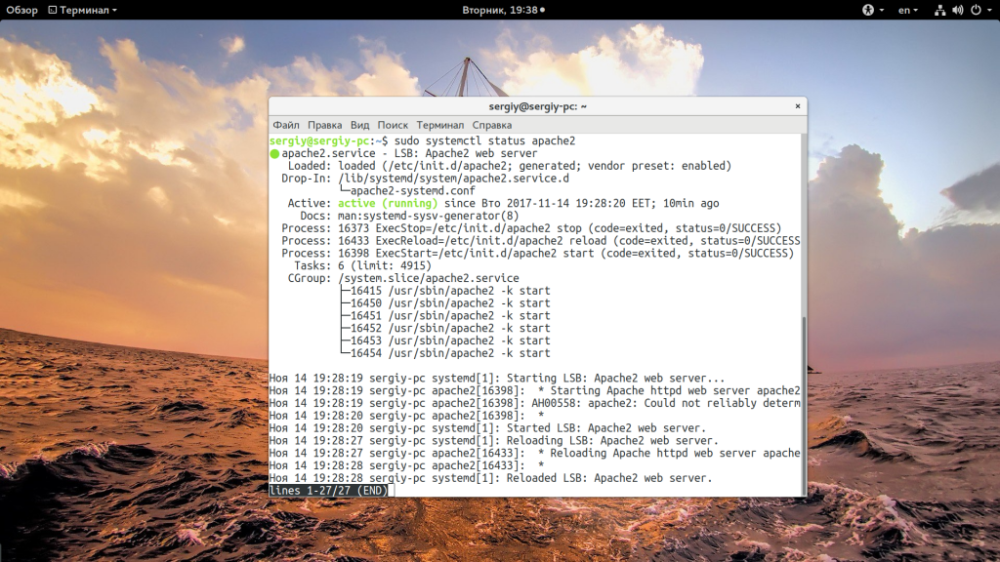
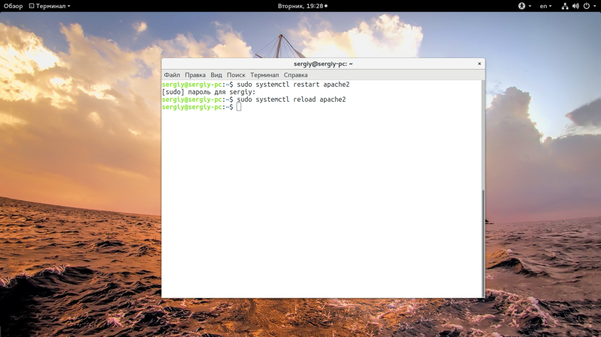
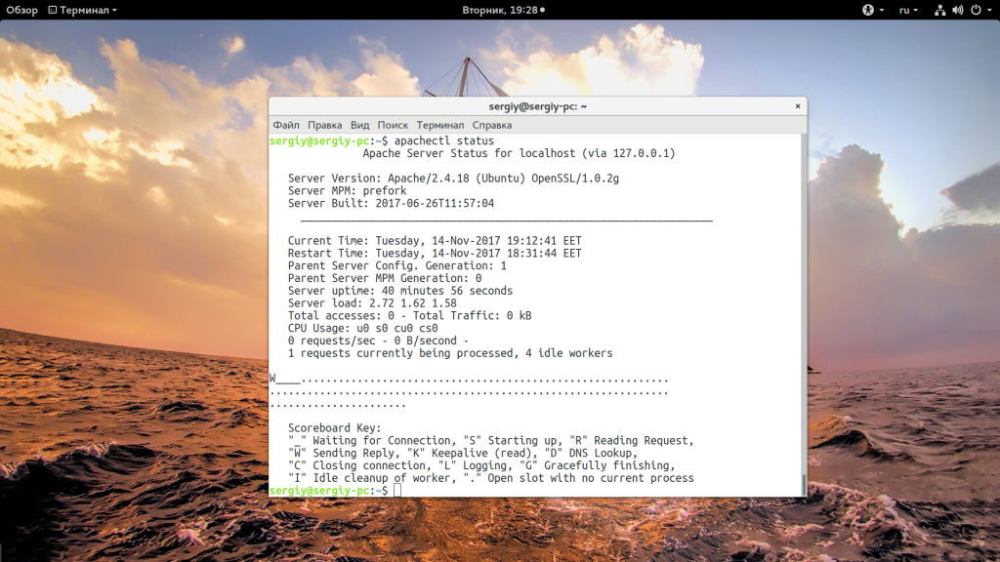
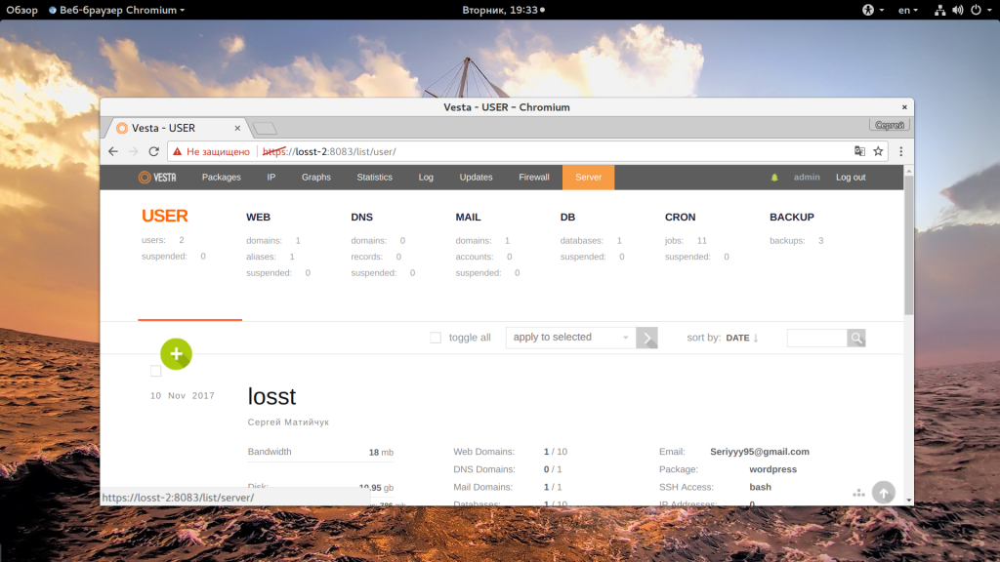
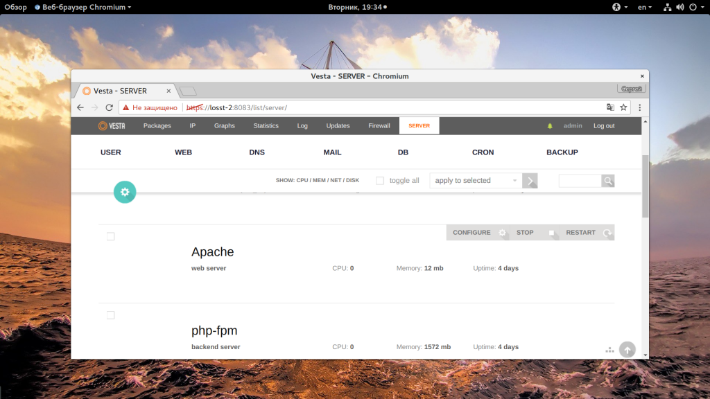

Код: [Выделить]
Перезапуск Apache в Ubuntu - $ sudo /etc/init.d/apache2 restart
Как и в большинстве других дистрибутивов, в Ubuntu используется система управления службами systemd. Именно ее мы и будем использовать для решения наших задач. Сначала давайте посмотрим запущен ли Apache и не выдает ли он каких ошибок:
sudo systemctl status apache2

В отличие от CentOS и других RedHat дистрибутивов, здесь Apache называется не httpd, а apache2. Поэтому если вы попытаетесь делать что-то с httpd, то у вас ничего не выйдет.
У нас есть два различных пути перезапуска Apache и несколько команд для выполнения нужных операций:
Для перезагрузки можно использовать три команды, это systemd, service и apachectl. Разработчики Apache рекомендуют использовать apachectl, но все другие команды просто являются оболочками для этой. Сначала systemctl:
sudo systemctl restart apache2
sudo systemctl reload apache2

Если вы хотите использовать service, то можно не писать sudo, тогда система спросит вас пароль сама:
service restart apache2
service reload apache2
Последний способ перезагрузки Apache - использовать apachectl:
apachectl -k restart
apachectl -k graceful
В каждой паре первая команда означает жесткую перезагрузку, а вторая - обновление конфигурации без перезагрузки сервиса. Вместо apachectl еще можно использовать ее алиас - apache2ctl. После перезагрузки посмотрите все ли правильно работает:
sudo systemctl status apache2
Более подробную информацию можно увидеть выполнив:
apachectl status

Если вас интересует ответ на вопрос, как запустить apache, то используйте команду start:
$ sudo systemctl start apache2
Перезапуск Apache в панели управления
Если вы используете панель управления сервером через веб-интерфейс, например, VestaCP, это сделать достаточно просто. Сначала откройте вкладку "Server":

Затем просто найдите в списке Apache и нажмите "Restart":

В этой статье мы рассмотрели как выполняется перезапуск apache ubuntu, несмотря на то, что это очень просто и вряд ли может вызвать проблемы, есть несколько способов, и теперь вы их знаете. Если у вас остались вопросы, спрашивайте в комментариях.